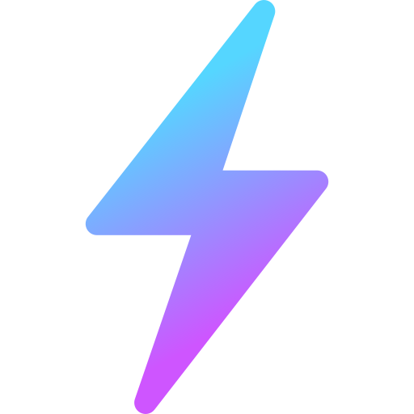

Sistem Pencapaian
Badge & Achievement
Kumpulkan badge dengan berkontribusi aktif. Hover badge untuk lihat cara mendapatkannya.
Pahlawan Sungai
50+ laporan terverifikasi
2.841 relawan
Cara dapat: Kirimkan dan verifikasi 50 laporan
kondisi sungai. Badge ini diraih oleh relawan paling aktif.
Penjaga Air
10 sungai berbeda dilaporkan
1.204 relawan
Cara dapat: Laporkan kondisi minimal 10 sungai
yang berbeda di seluruh Indonesia.
Eco Warrior
Selesaikan semua modul edukasi
3.512 relawan
Cara dapat: Selesaikan seluruh modul edukasi dan
raih skor quiz ≥ 70.

Streak Master
30 hari laporan berturut-turut
412 relawan
Cara dapat: Kirimkan laporan selama 30 hari
berturut-turut tanpa jeda.
Analis Senior
100 laporan dengan foto terverifikasi
68 / 100
Cara dapat: Kirimkan 100 laporan yang disertai
foto dan berhasil diverifikasi tim.
Explorer
Laporan dari 5 provinsi berbeda
2 / 5 provinsi
Cara dapat: Laporkan kondisi sungai dari minimal
5 provinsi berbeda di Indonesia.
Community Leader
Rekrut 10 relawan baru
2 / 10 relawan
Cara dapat: Ajak 10 orang baru bergabung menjadi
relawan aktif menggunakan kode referralmu.
River Legend
Capai rank #1 leaderboard nasional
Rank #9 saat ini
Cara dapat: Raih posisi #1 di leaderboard
nasional dan pertahankan selama 7 hari.